Ces produits indispensables !
Les produits pour le teint
Les meilleurs fond de teint
Dermablend 3D Correction de chez Vichy

C'est le moins cher de cette sélection puisqu'il coûte 19€99 et est trouvable sur le site Vichy lui-même. Il convient aux peaux grasses à tendances acnéique. Il a une texture très épaisse et une très haute couvrance ! Parfait pour camoufler les imperfections, les rougeurs et même déjà diminuées légèrement les cernes. Il réduit également très nettement l’apparence des pores. Le teint est comme flouté. Il se travaille et se fond très bien avec la peau. C'est un très bon rapport qualité-prix !
Born This Way de chez Too Faced

Il coûte 38€50 et est disponible chez Sephora. Il convient à tout type de peaux. Il a une texture liquide mais pas trop, juste ce qu'il faut et sa couvrance est modulable à totale ! Si c'est pas génial ça ! Peu importe le nombre de pompes que vous mettrez, il viendra cacher tout ce qu'il y a à cacher de disgracieux sur le visage en laissant un rendu très naturel ! Néanmoins, en cas d'acnés sévères il ne camouflera pas toutes les imperfections ! Et pour finir, il a une très bonne tenue. Si vous chercher un bon fond de teint foncez !
Diorskin Nude de chez Dior

Il coûte 47€95 et est disponible chez Sephora. Il convient à tout type de peaux. C'est un fond de teint fluide, à la couvrance légère à moyenne qui unifie et corrige tout en apportant de l'éclat à la peau. Le teint est unifié et la peau est indéniablement plus éclatante. Il a une très bonne tenue tout au long de la journée et ne nécessite pas vraiment d'être poudré, un gain de temps ! Il n'est pas extrêmement couvrant et donne un rendu plus naturel. C'est un fond de teint qui correspond aux peaux avec peu d'imperfections.
Double Wear Nude Water Fresh de chez Estée Lauder

Il coûte 48€95 et est disponible chez Sephora. Il convient aux peaux sèches à normales. Il a une courance modulable mais pas totale, tout dépend de comment nous l'appliquons. Il unifie le teint mais ne couvre pas les grosses imperfections. Il a un effet peau nue, zéro effet de matière. Attention toutefois en superposant les couches il peut quand même se voir légèrement, il reste quand même très fin sur la peau. Il est hydratant et lumineux néanmoins il ne sèche pas complètement et garde un fini un peu huileux. Il est très confortable du coup, il devrait plaire aux peaux sèche… Attention il est très liquide, peut-être trop pour certains. La tenue est moyenne mais quand même assez bonne pour un produit avec un fini comme celui là. Comme il garde ce côté « glowy » on a l’impression qu’il va glisser partout mais en fait il reste plutôt bien en place.
Les meilleurs anti cernes
Haute Couvrance de chez Sephora
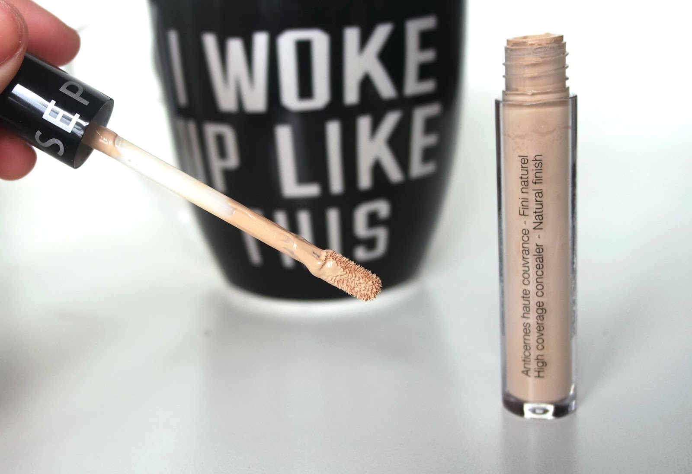C'est le moins cher de cette sélection puisqu'il coûte 13€95 et est trouvable chez Sephora.L’applicateur est très bien fait, il permet d’appliquer le produit aisément et directement avec l’embout mousse sur la peau. Cependant, il faudra l’essorer avant application car il prend beaucoup de matière. La texture est un gel/crème, elle est un tout petit peu plus épaisse que celle du célèbre « Naked skin » d’Urban Decay. Il ne sèche pas trop vite, on à le temps de le travailler. Cet anticernes a une très bonne couvrance. De plus, il illumine bien le dessous de l’oeil et donne un gros coup de frais ! On peut également s’en servir sur les rougeurs comme le contour du nez ou petites imperfections par exemple il est efficace. L’anticernes Sephora haute couvrance fini naturel est longue tenue. Il est toujours la en fin de journée. C'est un trèc bon rapport qualité prix !
Born This Way de chez Too Faced

Il coûte 28€ et est disponible chez Sephora. L’applicateur mousse est très bien pour déposer la matière en quantité souhaité. Il faut bien tapoter la matière et ne pas trop l’étirer pour un résultat optimal. Pensez à bien fondre le tout surtout ! Il a une excellente couvrance mais mal travaillé par contre, cela peut vite donner un rendu « plâtre ». Il faut donc bien doser la quantité de produit à appliquer. En plus d’être couvrant, il illumine parfaitement le regard. Etant riche en acide hyaluronique, il permet de ne pas déshydrater le dessous de l’oeil. Parfait pour les peaux normales à sèches donc. Pour les peaux mixtes à tendance grasse, il est impératif de le poudrer pour éviter qu’il ne bouge légèrement.
Radiant Creamy Concealer de chez Nars
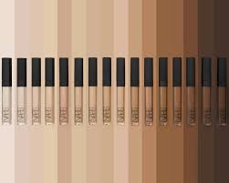Il coûte 30€95 et est disponible chez Sephora. La distribution se fait via un embout mousse tout simple. L’anticernes, lui, est crémeux, non gras et hyper pigmenté ! Il glisse sur la peau, ne la dessèche pas et s’estompe très bien. La couleur est lumineuse et très pigmentée et il est tout à fait possible de moduler la couvrance avec une ou plusieurs « couches ». À l’application, le Radiant Creamy Concealer a un aspect très glowy, très lumineux un peu luisant mais une fois poudré, le finit devient totalement mat et naturel ! Il fait très bien son job : pas de pâté, pas de tâche, pas de migration mais des rougeurs totalement cachées. Par contre, il ne faut pas trop en mettre car le rendu peut devenir un peu bizarre, comme plâtré surtout avec la poudre. L’anticernes ne bouge pas même après 2h de sport. Le produit ne migre pas du tout dans les plis et ne marque pas les ridules.
Full Cover de chez Make Up For Ever
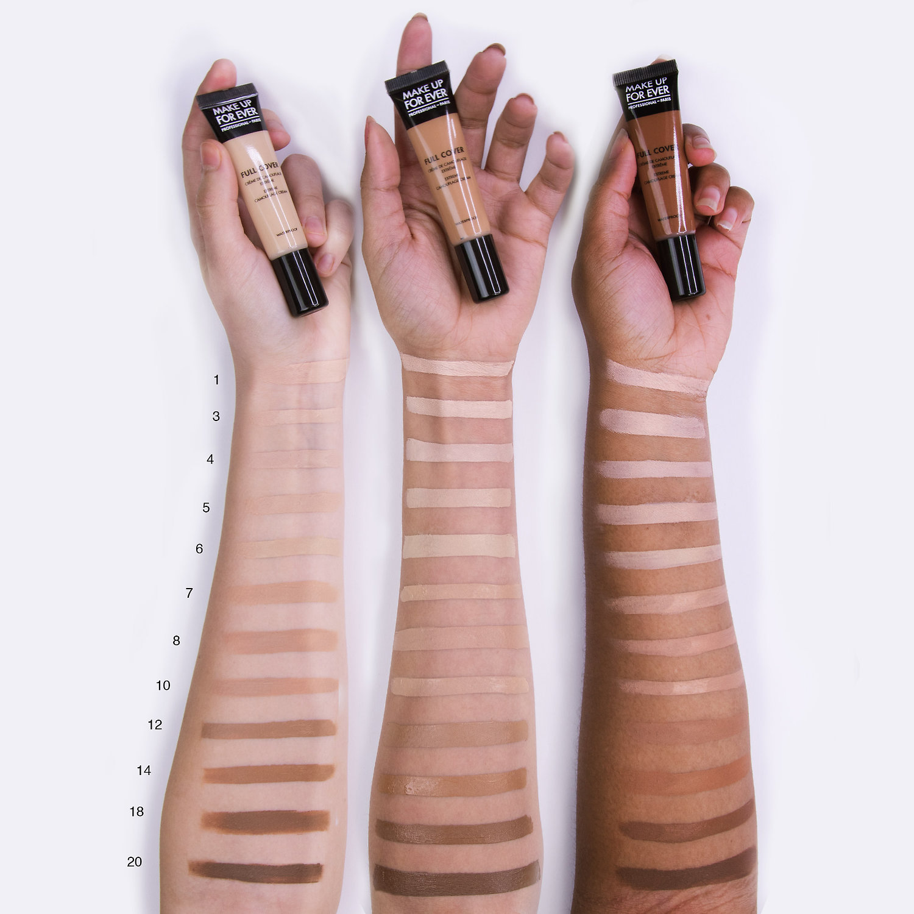Il coûte 32€95 et est disponible chez Sephora. Le Full Cover est un correcteur de compétition, autrement dit "une crème de camouflage extrême", elle est souvent utilisée pour recouvrir les tatouages, imaginez la puissance du truc... Ce produit est waterproof et résiste absolument à tout ! La texture est très épaisse et se travaille, il ne faut pas l'appliquer "juste comme ça" sinon vous allez plâtrer l'imperfection et elle sera encore plus visible. L'appliquer sur tout le visage ne serait vraiment pas une bonne idée car cette crème n'est pas très confortable si on ne l'utilise pas que par petites touches, elle s'étale difficilement et sèche très vite. Pour les cernées, les joues rouges, les peaux capricieuses, Full Cover est votre solution.
Les meilleures poudres libres
Invisible Powder de chez Kiko
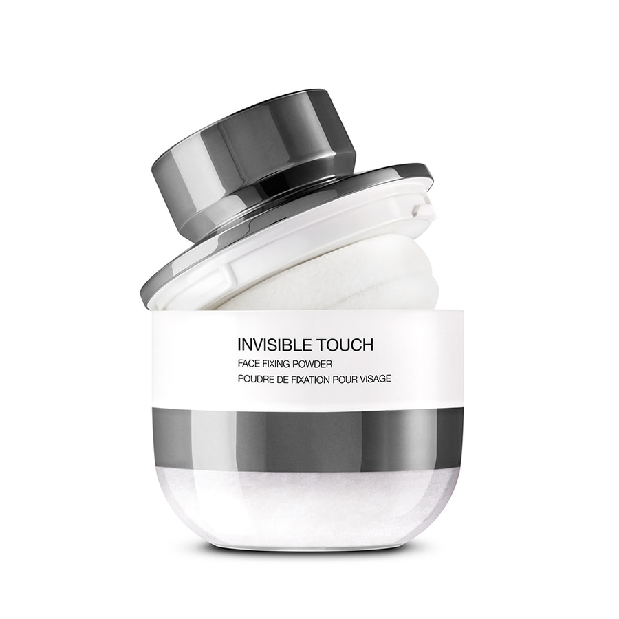C'est la moins cher de cette sélection puisqu'elle coûte 12€95 et est trouvable chez Kiko. Une poudre invisible qui ne se voit pas. Un produit indispensable quand on a une peau qui a tendance à briller. Il est facile d'utilisation grâce à son éponge intégrée. Il rend la peau mat et tient toute la journée sans dessécher la peau. C'est un très bon rapport qualité prix !
Beauty Amplifier Poudre Lissante Eclat de chez Sephora
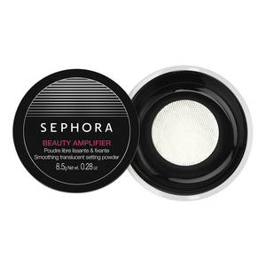Elle coûte 15€95 et est disponible chez Sephora. Cette poudre rend la peau lisse et matifiante, sans rendre la peau plus clair, attention à ne pas trop en mettre elle risque de faire un effet sec sur la peau. Pour les peaux à tendance grasse il faut se poudrer régulièrement car elle ne matifie que 2/3 heures. Facile à appliquer et agréable à porter. Elle fixe le maquillage. Elle a un prix très correct et est en réelle concurrence avec la poudre de chez Kiko.
Poudre HD Microfinition de chez Make Up For Ever
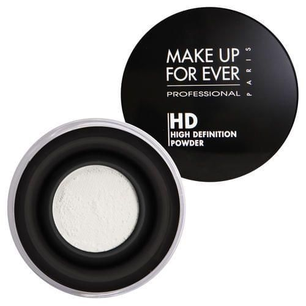Elle coûte 33€95 et est disponible chez Sephora. La poudre est très fine, invisible sur la peau malgré cette teinte blanche, le rendu plus imperceptible qu'avec une poudre matifiante "classique". Elle floute le grain de peau momentanément, avec un effet peau douce et veloutée. Elle ne laisse aucune trace blanche ou autre, je vois un réel effet sur la peau, elle tient longtemps. Son seul bémole est son prix excessif.
Poudre Libre Fixante de chez Laura Mercier
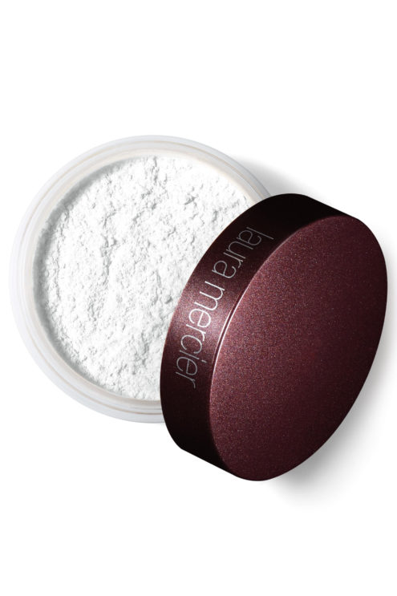Elle coûte 42€ et est disponible chez Birchbox. Cette poudre laisse un fini doux sur la peau, elle est incroyable. Elle donne un effet ultra naturel, et surtout elle unifie le teint, elle gomme les imperfections. Elle est juste bluffante! De plus elle correspond à toutes les teintes de peau. Néanmoins, attention à ne pas trop en mettre. Malgré son prix élevé elle est très apprécié des internautes.
Les meilleures palettes de contouring
Palette Contouring Studio de chez ELF

C'est la moins cher de cette sélection puisqu'elle coûte 8€ et est trouvable chez ELF. La palette n’est pas trop grande, les fards ont pourtant une taille correcte. Au niveau des poudres, on trouve encore quatre teintes différentes, elle est un peu moins complète que la Makeup Revolution. La texture des poudre est fine et satinée. Les poudres sont pigmentées et s'estompent parfaitement bien. L'hilighter est très subtil mais naturel et peut se porter tous les jours. C'est une palette que vous apprécierez si vous débutez.
UltraContour Palette de chez Make Up Revolution

Elle coûte 9€99 et est disponible chez Maquillalia. Elle possède trois poudres bronzantes, 2 poudres de finition, une rosée et une plutôt jaune, et 3 hilighters, un champagne, un pêche et un blanc. On a largement de quoi se faire plaisir avec cette palette pour les amatrices de contouring et de strobing. Très honnêtement, pour son prix, la qualité des poudres est impressionnante. Elles sont vraiment bien pigmentées mais faciles à travailler et la tenue est vraiment top ! Je vous la recommande si vous chercher une palette complète à petit prix !
Naked Flushed de chez Urban Decay
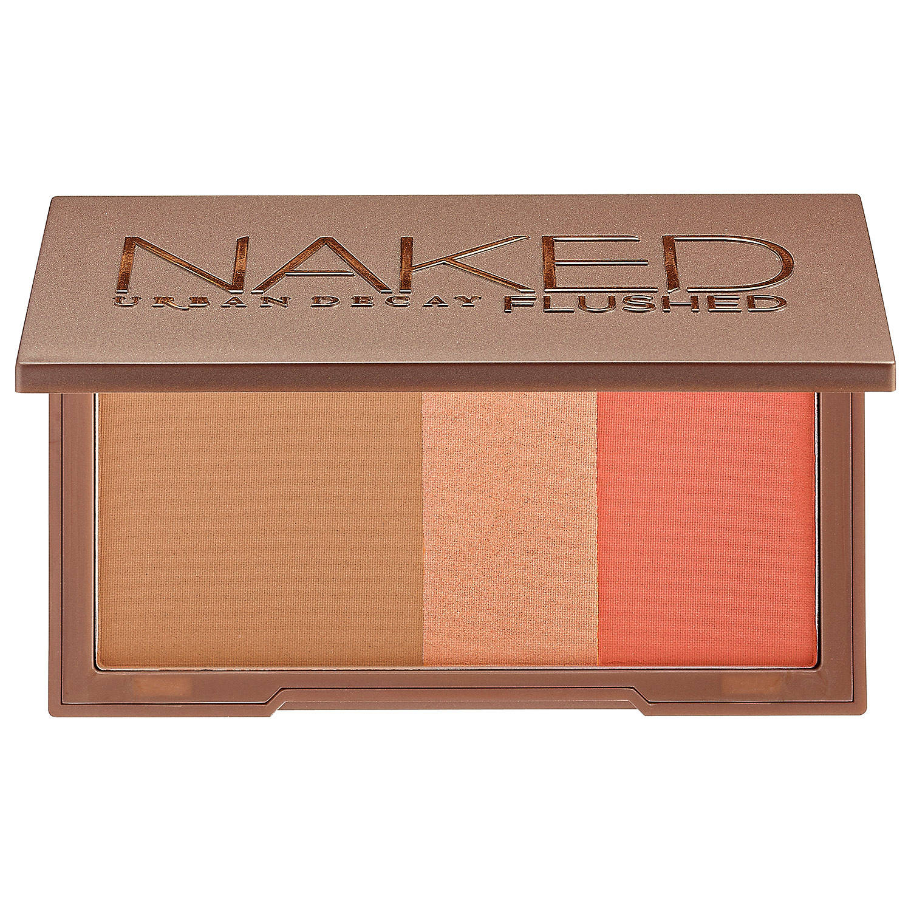Elle coûte 37€95 et est disponible chez Sephora. Cette palette est disponible dans 6 teintes différentes donc vous trouverez forcément votre bonheur. Elle se compose d'un bronzer, d'un hilighter et d'un blush. Elle est très compacte donc facile à emporter et ces fards ont quand même une très bonne quantité. Elle n'est pas donnée niveau prix mais contient l'essentiel.
Shade+Light Contour Palette de chez Kat Von D

Elle coûte 45€ et est disponible chez Sephora. Il s’agit d’une palette contouring contenant 6 poudres au fini mat adaptées à toutes les carnations. Ces poudres pour le contouring sont douces et faciles à travailler. Elle est conseillée vivement aux peaux normales, mixtes et grasses ! En revanche, si votre peau est sèche, n’ayez pas la main lourde car elle risque d’accentuer vos sécheresse. Si vous aimez les hilighters bien brillant passez votre chemin car cette palette contient 0 paillette. La palette est 100% vegan !
Les meilleures palettes de blush
Palette de Blush Studio de chez ELF

C'est la moins cher de cette sélection puisqu'elle coûte 8€ et est trouvable chez ELF. Ce quad qui propose quatre blush est juste superbe. La pigmentation est folle et nécessite d'avoir la main légère. Les couleurs sont super pour les peaux claires, le miroir est pratique est permet d'utiliser la palette n'importe ou. Bonne couvrance, jolies couleurs de blush qui illuminent le visage ! Une très bonne petite palette pour débuter.
Infaillible Paint La palette Blush de chez L'Oréal

Elle coûte 16€20 et est disponible chez L'Oréal Paris. Elle existe en 2 teintes différentes et contient 5 fards à chaque fois. La pigmentation est clairement au rendez-vous ! La texture des blushs est assez poudrée mais pas trop et ils se travaillent très facilement. L’Infaillible Blush Paint est une très bonne alternative pour celles qui souhaiteraient soit élargir leur collection de blush, soit découvrir une nouvelle palette a petit prix !
Blush Trio de chez Anastasia Beverly Hills

Elle coûte 33€95 et est disponible chez Sephora. Beau packaging digne d'une grande marque, jolie couleur modulable. Les 3 teintes sont bien complémentaires, fusionnent très bien et donnent un joli rendu naturel et bonne mine. Très bonne présentation avec les trois couleurs, très bonne tenue, très faciles d'application. Tient toute la journée et très beau rendu, et le fait de pouvoir utiliser les couleurs ensembles ou séparément c’est vraiment génial !
Air Blush de chez Marc Jacobs

Elle coûte 37€ et est disponible chez Sephora. Il existe 5 teintes différents composées à chaque fois de 2 blush. Le nouveau Air Blush by Marc Jacobs a été pensé pour « lifter, sculpter, apporter du volume » grâce à la technique du draping. Une nouvelle tendance inspirée du contouring qui consiste à réaliser un contouring avec du blush (et plus précisément 2 teintes de blush) ! Sous la pommette, là où l’on appliquerait son bronzer on balaye une couleur de blush un peu plus foncée/plus « chaude » ou bronze tandis que sur la pommette on opte pour un rose plus vibrant. Cet Air Blush bicolore a été pensé pour habiller les pommettes d’un fini velouté, d’une couleur naturellement lumineuse, inspirée de l’effet « bonne mine » produit par une folle soirée.
Les produits pour les yeux
Les meilleurs mascaras
Dermablend 3D Correction de chez Vichy
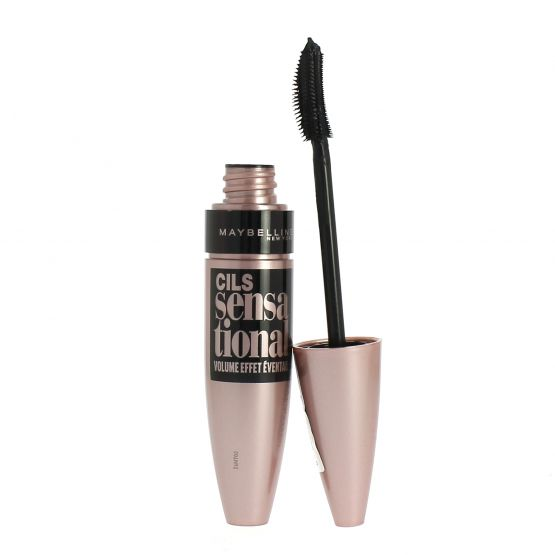C'est le moins cher de cette sélection puisqu'il coûte 10€ et est trouvable sur le site Beauty Discount. C'est un mascara volumateur, effet « éventail ». C’est à dire que la brosse incurvée (en plastique) sépare bien les cils et les différentes tailles des picots permettent une application de la matière parfaitement adaptée. La formule utilisée dans le Cils Sensational est également allégée en cire, elle est plus fluide, plus légère. La partie incurvée de la brosse se place au ras des cils, on la tourne ensuite en remontant sur les cils. On applique ainsi la bonne quantité de produit, et on sépare vraiment les cils. Il donne du volume, recourbe les cils, les allonge et les sépare sans faire de paquets. Il a un effet naturel qu'on adore !
They're Real de chez Benefit
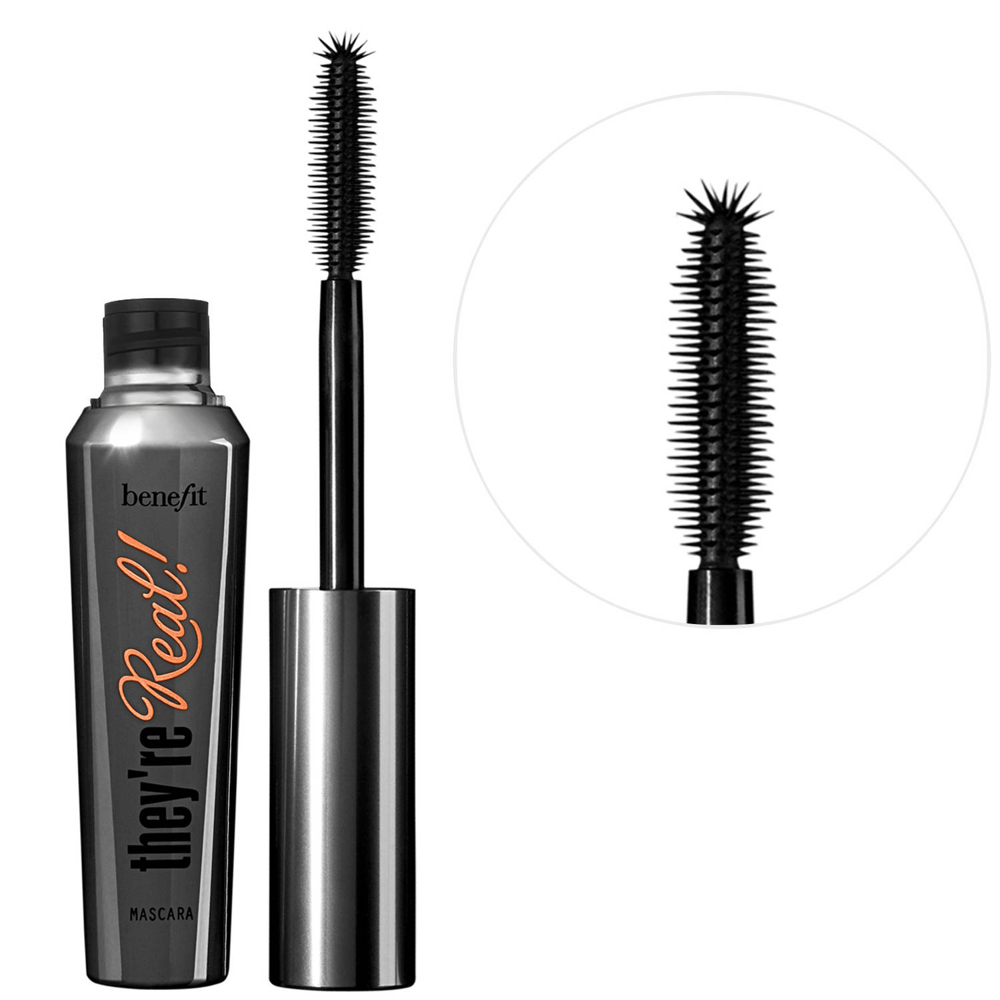Il coûte 27€ et est disponible chez Sephora. Il allonge les cils et leur apporte du volume. Il les recourbe également très bien. La différence n’est pas flagrante avec ou sans utilisation du recourbe-cils d’ailleurs, preuve de son efficacité. Sa brosse est pratique pour recouvrir tous les cils d’un seul coup, même ceux en coin interne et externe, difficile à attraper. Son intensité est parfaite, tout comme sa tenue d’ailleurs. Il tient effectivement toute la journée sans couler.
Volume de Dior de chez Dior
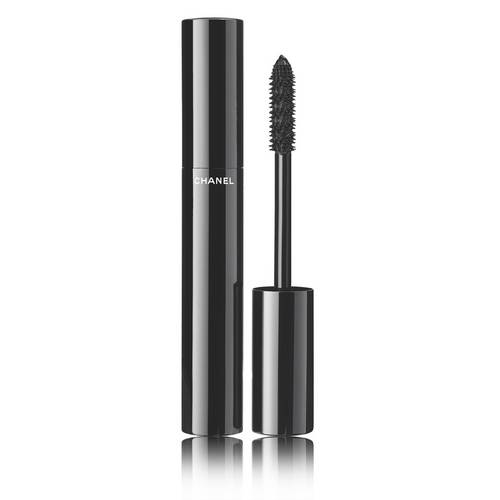Il coûte 35€ et est disponible chez Sephora. Les cils s'allongent et se démultiplient, ils gagnent en longueur et volume. La formule du mascara est plutôt réussie, elle est assez fluide, pas trop épaisse et se travaille bien même en n'ayant peu de temps. Elle sèche rapidement et ne cartonne pas les cils. Elle n'alourdit d'ailleurs pas les cils et ne les fait pas ployer. Elle est bien noire, ce qui est génial quand on aime les cils intensifiés en couleur. La brosse est en silicone et est assez grosse. Elle n'est pas très pratique pour les cils du bas, on a tendance à s'en mettre partout. Par contre, elle est facile à manier et attrape les cils dès la racine, même les plus courts. Elle a un embout qui permet d'insister un peu plus sur les cils extérieurs. La combinaison de la brosse et de la formule du Volume de Chanel est très réussie. En une couche, on a un résultat très satifaisant, avec des cils allongés et volumisés. En deux couches, le résultat est un peu amplifié et il n'y a pas d'effet pattes d'araignée donc c'est super pour le porter au quotidien. Le regard est effectivement ouvert et du coup, on a l'air un peu moins fatigué.
So curl de chez Sisley
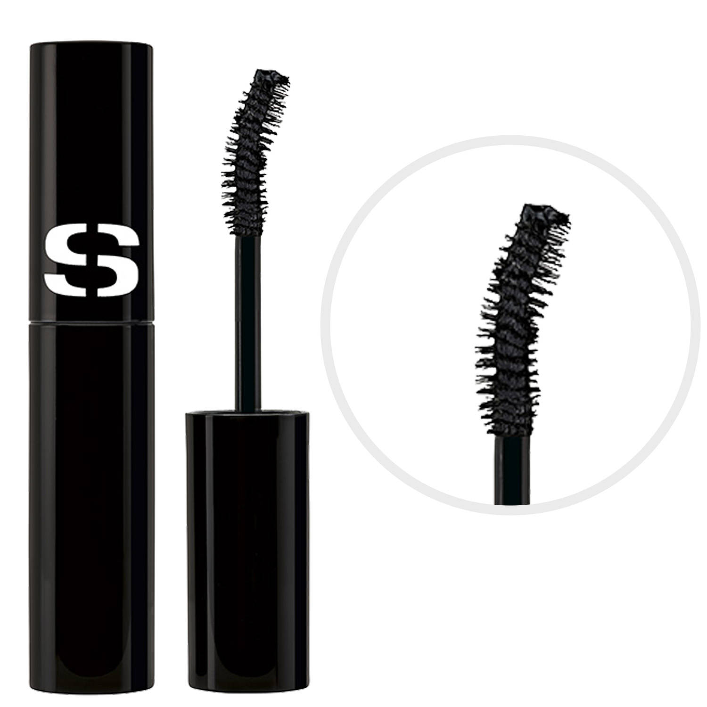Il coûte 43€50 et est disponible chez Sephora. So Curl est un mascara dont la formule combine soin complet des cils et texture gainante, recourbante et longue tenue pour une frange de cils aux courbes renversantes, et des cils jour après jour plus longs, plus denses, plus forts et plus beaux. Il contient de la Pro-vitamine B5 qui est fortifiante, elle donne du corps et du volume aux cils, des Phytocéramides de Riz qui se fixent sur les cils afin de les rendre plus résistants et de l’extrait de Passiflore adoucit et l’huile de Ricin qui contribue à revitaliser et à embellir les cils. En 4 semaines, les cils sont plus longs et plus denses. Ils sont fortifiés et tombent moins lors du démaquillage. Entre volume et courbes, le mascara So Curl offre un regard captivant grâce à sa formule gainante, recourbante et longue tenue. La brosse du mascara So Curl a été étudiée pour épouser parfaitement la forme de l’œil et imprimer une cambrure instantanée. Constituée de fibres idéalement implantées, elle permet de déposer la juste dose de produit en un passage pour des cils étoffés sans paquet. Très maniable, elle permet d’attraper facilement tous les cils, même les plus petits, pour une frange de cils parfaitement déployée. Ultra-douce et souple elle offre un véritable confort à l’application.
Les meilleures palettes
Flawless de chez Make Up Revolution
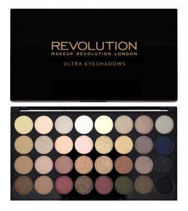C'est la moins cher de cette sélection puisqu'elle coûte 9€95 et est trouvable sur le site Maquillalia. La palette possède un grand miroir face à ses 32 fards. Parmi les fards satinés dont certains sont semi crémeux, 6 sont mates. L'application est agréable, car ils se travaillent facilement grâce à la bonne pigmentation et la texture des fards satinés qui sont légèrement crémeux. Le ton chaud et nude cohabite dans cette palette pour le bonheur de celle qui recherche un maquillage de tous les jours. Elle offre aussi des possibilités en smoky, même si à mon avis elle n'est pas vraiment destinée pour cela. Mais, tout est possible avec cette palette et chacune fait comme elle veut évidemment. Cette palette est très bien fournie et possède de nombreux fards, le rapport qualité-prix est excellent et imbattable !
Modern Renaissance de chez Anastasia Beverly Hills
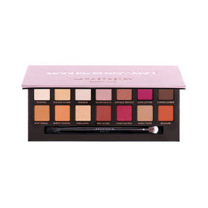Elle coûte 49€ et est disponible chez Sephora. Elle se compose de 14 fards à paupières dans les tons neutres et baie dont dix mats, deux métallisés et deux satinés. Les couleurs sont toutes très jolies et offrent effectivement de multiples harmonies possibles. La Modern Renaissance peut se suffire à elle-même. Les fards sont archi pigmentés et possèdent une texture tendre qui permet de les travailler à merveille. Ils sont par contre poudreux à mort et même s’il suffit de penser à tapoter son pinceau avant d’attaquer le chantier, ce qui évite de voir son visage et son teint recouvert de pigments. Les fards accrochent à merveille la paupière et ils tiennent sans filer toute la journée. La Modern Renaissance d’Anastasia Beverly Hills a provoqué un véritable buzz et elle est encore aujourd’hui en rupture de stock très régulièrement. Pour le prix, c’est un bon investissement puisque les fards à l’unité sont très chers et qu’ici, on se retrouve avec quatorze fards de qualité dans des teintes très facilement portables et associables entre elles. Une palette à avoir dans ses tiroirs.
Naked Heat de chez Urban Decay
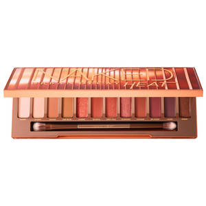Elle coûte 49€95 et est disponible chez Sephora. Au total, ce sont donc 12 teintes, composées de 8 fards mats, 1 cuivré et 3 métalliques, totalement exclusives qui ont été développées par Urban Decay. Comme à son habitude, la marque a intégré un grand miroir ainsi qu’un double-embout à sa palette Naked Heat. Tendance oblige, la Naked Heat propose une large dominante de fards à paupières au fini mat. Pour les fards restants, il faudra compter sur une proposition irisée et métallisée. Cette proposition de palette de maquillage a franchement de quoi provoquer des dégâts chez celles qui débutent en makeup. Disons que cette palette-ci est beaucoup plus clivante que les précédentes. La tenue des fards est toujours très bonne néanmoins, ces fards provoquent énormément de chutes. C'est une palette à avoir si on adore les tons chauds et les maquillages assez voyant.
Textured Shadows Palette Rose Gold Edition de chez Huda Beauty
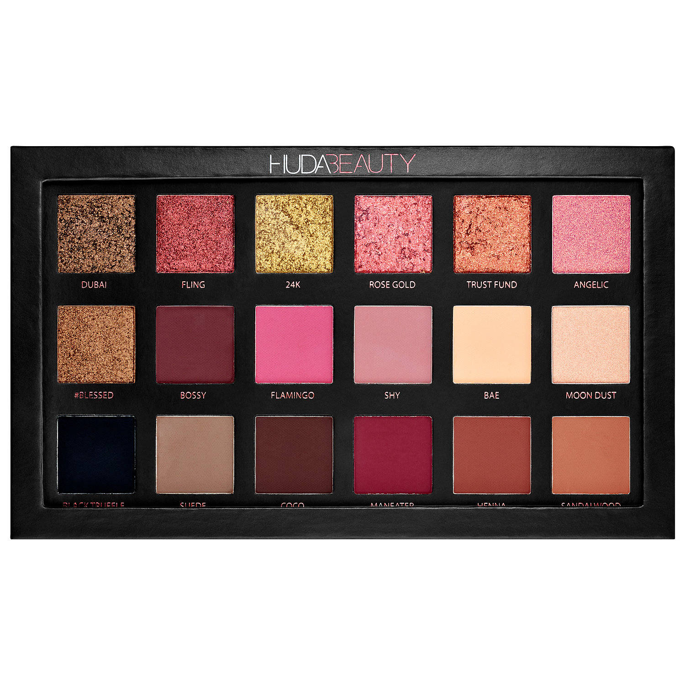Elle coûte 64€95 et est disponible chez Sephora. Dix-huit fards composent donc cette palette : 6 fards 3D métalliques, 2 fards perlés et 10 fards mats. Les fards dits "3D" sont à appliquer au doigt car un pinceau ne prendra aucune matière ! L’effet de ses fards à paupières est complètement dingue et tiennent super bien ! Aucun ne se ressemble, ils sont doux et se mélangent entre eux très bien. Ils sont très modulables, car si vous le souhaitez en outre, ils peuvent se superposer sans se fondre en une seule couleur grise. Les fards ne chutent pas énormément, sauf pour les deux fards 3D qui possèdent le plus de texture. Aussi, le fard BAE fait beaucoup de poudre quand on le prélève seulement. Les fards sont très pigmentés et se travaillent bien. Il faut juste veiller à ne pas déposer un pâté de couleur qui sera ensuite dur à estomper. Son prix est élevé mais pour des fan de makeup foncez !
Les meilleures produits sourcils
Crayon sourcils de chez Yves Rocher

C'est le moins cher de cette sélection puisqu'il coûte 9€90 et est trouvable sur le site Yves Rocher. Il est facile à utiliser et se décline en quatre teintes selon votre couleur de cheveux. Canon aussi la brosse à sourcils, pas façon peigne mais façon applicateur de mascara, beaucoup plus efficace ! Pour les débutantes en maquillage ce crayon est fait pour vous car il n'est pas trop cher mais efficace !
Dipbrow Pomade de chez Anastasia Beverly Hills

Il coûte 21€95 et est disponible chez Sephora. On découvre un petit pot en verre de 4g aux finitions très qualitatives. On pourrait penser que 4g ce n’est rien, mais je vous assure qu’avant de venir à bout de ce petit pot, il va s’écouler un bon moment. Le produit étant très pigmenté et surtout, il en faut très peu, il est vraiment économique. Ce produit est idéal pour avoir un rendu sourcils sophistiqué, un peu à l’image des “sourcils instagram” si vous voyez ce que je veux dire. C’est le produit parfait pour obtenir des sourcils parfaits avec une très longue tenue, le tout en restant naturel. La texture est très fondante en la prélevant du pot, mais surtout : elle se travaille terriblement bien. Il est waterproof et sèche totalement.
Aqua Brow de chez Make Up For Ever

Il coûte 22€95 et est disponible chez Sephora. Aqua Brow est un correcteur sourcils à la texture crémeuse. Il permet de redessiner, intensifier et redéfinir la ligne des sourcils. Sa formule longue tenue résiste à l'eau et couvre tous les poils pour un résultat net et précis. Il faut choisir la couleur du correcteur un ton plus clair que les sourcils. Prélevez une très petite quantité de produit sur le dessus de la main ou directement du tube, plus comblez les zones dégarnies ou redessinez entièrement la ligne des surcils, et laissez sécher quelques secondes. 7 teintes sont disponibles.
Goof Proof de chez Benefit

Il coûte 27€50 et est disponible chez Sephora. Il s'agit d'un système à double-embout. Le premier côté se compose d'une mine biseautée en forme de losange. Le second côté présente un goupillon (brosse) pour estomper le produit et coiffer les sourcils après l'application. La pigmentation est top en réalité. La mine est suffisamment fine pour tracer avec précision les contours et pour remplir et combler les trous de façon très rapide. La est tout bonnement parfaite ! Si le côté sec peut être un frein quant à l’application, clairement c’est un point positif pour la tenue. En effet, la matière ne bouge pas de la journée, aucune bavure et surtout aucune perte d’intensité, c’est parfait.
Les produits pour les lèvres
Les meilleurs rouges à lèvres
Longstay Liquid Matte Lipstick de chez Golden Rose

C'est le moins cher de cette sélection puisqu'il coûte 5€90 et est trouvable sur le site Cookie's Make Up. Il existe 26 coloris différents qui sont très variés et au goût de chacuns. La matière est facile à appliquer et il sent le cupcake à la vanille ce qui est un bonus important. L’embout mousse permet d’épouser facilement le contour des lèvres. Une seule couche suffit pour que le fini soit bien opaque. La matière sèche rapidement, en 2 minutes le fini est complètement mat sans pour autant avoir l’impression d’avoir appliqué du plâtre sur ses lèvres. Son opacité et sa longévité sont clairement ses points forts. Je le trouve comparable au Rouge velouté sans Transfert de Sephora, mais en moins liquide et moins asséchant. La formulation le rend facile à appliquer et agréable à porter.
Rouge velouté sans transfert de chez Sephora

Il coûte 10€95 et est disponible chez Sephora. À l’application, on apprécie sa senteur gourmande. La texture est fondante, mais pas vraiment liquide, presque mousse, et de ce fait facile à appliquer sans déborder. Au bout d’une à deux minutes environ, la formule se matifie et devient littéralement sans transfert. Des bisous, des cafés, des essayages de vêtements, rien ne se tache de ce rouge à lèvres. Parce qu’il a une excellente qualité/prix et qu’il est sans transfert. Son opacité en une seule couche est également appréciable. Comme c’est l’un des rouges à lèvres liquides les plus tenaces du marché, il n’est pas très doux avec nos lèvres. Je ne conseille pas de le porter tous les jours, même par-dessus un bon baume. C’est exactement ce que la marque en dit, pas de publicité mensongère. La texture est fondante à souhait et la tenue irréprochable.
Everlasting Liquid Lipstick de chez Kat Von D

Il coûte 19€95 et est disponible chez Sephora. L’applicateur est adapté sur un manche très long, ce qui, je trouve, ne facilite pas l’application, on a davantage tendance à déborder. La texture est moins opaque que le Lip Stain Sephora, surtout pour les teintes les plus claires. C’est l’une des gammes les plus riches en couleurs originales, et certaines sont déjà cultes (Bow N Arrow, un nude très nude, Lolita et son petit frère Lolita I, Lovesick…). Le fini est mat, la tenue est longue, formule est crémeuse, mais pour les teintes hautement pigmentées, tout dépend de la couleur sélectionnée. La collection de rouges à lèvres liquides Everlasting est composée de 26 teintes, de la plus classique à la plus originale.
Melted Matte de chez Too Faced

Il coûte 21€50 et est disponible chez Sephora. La formule des Melted Matte Too Faced a été optimisée : les Melted Matte sont enrichis en huile d’avocat et en vitamine E afin d’apporter davantage de confort sur les lèvres. En plus, le « Vollulip », un ingrédient qui booste le volume des lèvres, a été ajouté à la formule. L'application est simple, uniforme dès le premier passage, le séchage est rapide et laisse un fini vraiment mat. Il est sans transfert et ne bouge presque pas. Il suffit d'une petite retouche après le repas pour un résultat parfait mais rien d'alertant si jamais vous ne l'avez pas sur vous ! Il n'assèche pas les lèvres et laisse une sensation très légère sur les lèvres.